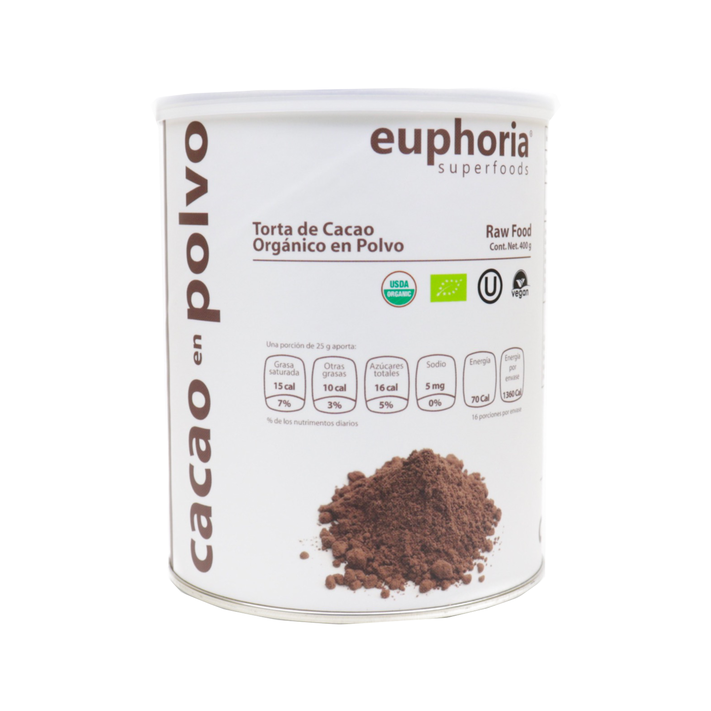
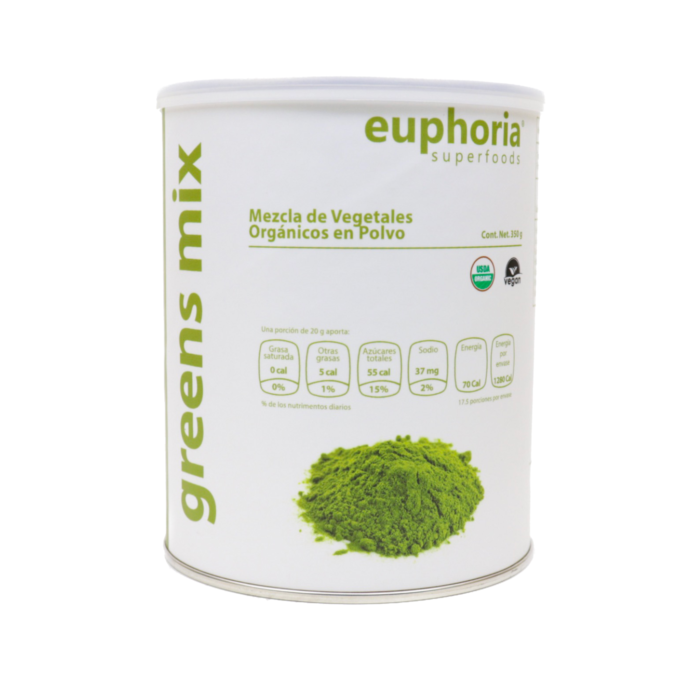

Consultas de Nutrición
Alimentarte saludablemente es mucho más sencillo de que lo que crees. Aprenderás a relacionarte de manera distinta con los alimentos, y disfrutarás del proceso mientras logras tus objetivos.
La sesión consiste en evaluar tu estado de nutrición a través de distintas medidas como peso, estatura, IMC (índice de masa corporal), circunferencia de cintura y porcentajes de grasa y agua corporal. El plan de alimentación se elabora de acuerdo a tus gustos, horarios, actividades y enfermedades, en caso de padecer alguna; se modificará cada sesión para que puedas ir intercambiando entre las distintas opciones.
Atiendo a:
- Niños, adolescentes y adultos
- Deportistas
- Mujeres embarazadas y en periodo de lactancia
- Control de grasa corporal / peso (sobrepeso, obesidad y desnutrición)
- Personas que padezcan enfermedades agudas y/o crónicas (diabetes, hipertensión, Colesterol y triglicéridos elevados, enfermedades cardiacas, gastritis, colitis, etc.)
Modalidad:
- Presencial
- A domicilio
- En linea (Skype, Facetime, videollamada, Whatsapp o Instagram)
Sesiones Grupales
Alimentación consciente
El propósito es que conozcan los beneficios de llevar una alimentación saludable, obteniendo herramientas para alimentarse con conciencia plena. Aprenderán a diferenciar entre hambre física y emocional, y transformarán su relación con los alimentos, identificando patrones dañinos y falsas creencias.
Dinámicas:
- Planeación de menú
- Meditación para conectar con los sentidos
- Establecimiento de metas
Meditación
El objetivo es proporcionar herramientas para integrar la práctica de meditación a su vida, y crear conciencia sobre los beneficios que obtendrán a nivel físico, emocional, mental y espiritual.
Dinámicas:
- Respiración consciente.
- Sonoterapia (tingshas, cuencos tibetanos, ahau drum, koshi).
- Meditación guiada (tema a elegir).
Meditación con Cacao
Es una experiencia que tiene el propósito de abrir el corazón para sentir, entender y liberar emociones y falsas creencia.
Utilizamos herramientas que facilitan el estado meditativo como la sonoterapia (cuencos tibetanos, healing drum, ahau drum, koshi, tingshas etc.), la meditación guiada y la música medicina; todo ello va acompañado de una bebida terapéutica de cacao artesanal (42 g).
No es necesario que estés familiarizado con el tema de meditaciòn, lo único que se requiere es estar abierto a sanar.
El espacio se armoniza con un altar de flores, velas y cuarzos para que los participantes conecten con la belleza desde el momento en el que llegan.
Es una forma hermosa y distinta para festejar cumpleaños, aniversarios o momentos especiales, donde se tiene el propósito de conectar con las personas especiales en nuestra vida.
Al finalizar la sesión te sentirás en paz, ¡vibrarás en la frecuencia del amor incondicional!
Sesiones:
- Individuales
- En pareja
- Grupales privadas o abiertas
Sonoterapia & Reiki
Es una terapia de sanación donde las principales herramientas utilizadas son la sonoterapia (cuencos tibetanos, healing drum, ahau drum, koshi, tingshas, etc.) y la técnica de reik, que se enfoca en armonizar los chakras.
Al finalizar la sesión te sentirás muy relajado y gozarás de claridad mental.
Sesiones:
- Privadas
- En pareja
- Grupales
Superfoods & CBD
Aceite de Hemp (500ml)
- Fuente de ácidos grasos poliinsaturados 3: 1 de Omega-6 a Omega-3.
- Excelente fuente de vitamina E.
Beneficios:
- Ayuda a mantener los niveles de glucosa estables.
- Efecto anticancerígeno, antiséptico y antiinflamatorio.
- Efecto antidepresivo.
- Disminuye colesterol, triglicéridos y la presión arterial.
Recomendado para:
- Niños, adolescentes, adultos y adultos mayores (frágiles).
- Deportistas y sedentarios.
- Mujeres embarazadas o periodo de lactancia.
- Enfermedad hepática.
- Enfermedades crónicas degenerativas como diabetes, hipertensión arterial, cardiopatías.
- Enfermedades agudas como colitis, gastritis, enfermedades respiratorias, alergias, intolerancias.

Corazones de Hemp Orgánicos (454 gr)
- Fuente de ácidos grasos poliinsaturados.
- Proteína vegetal de alto valor biológico (contiene todos los aminoácidos esenciales).
- Fuente de fósforo, magnesio, folato, hierro, manganeso, zinc, vitamina E, vitaminas del complejo B (b1, B2, B3, B6 y B9).
Beneficios:
- Disminuye la inflamación del colon, acelera tránsito intestinal.
- Ayuda a mantener los niveles de glucosa estables.
- Efecto anticancerígeno, antiséptico y antiinflamatorio.
- Disminuye colesterol, triglicéridos y la presión arterial.
Recomendado para:
- Niños, adolescentes, adultos y adultos mayores (frágiles).
- Deportistas y sedentarios.
- Mujeres embarazadas o en periodo de lactancia.
- Enfermedades crónicas degenerativas como diabetes, hipertensión arterial, cardiopatías.
- Enfermedades agudas como colitis, gastritis, enfermedades respiratorias, alergias, intolerancias.

Proteína de Hemp (454 gr)
- Fuente de ácidos grasos poliinsaturados (Omega 3 y 6).
- Proteína vegetal de alto valor biológico (contiene todos los aminoácidos esenciales).
- Fuente de fósforo, magnesio, folato, hierro, manganeso, zinc, vitamina E, vitaminas del complejo B (b1, B2, B3, B6 y B9).
Beneficios:
- Disminuye la inflamación del colon, acelera el tránsito intestinal.
- Ayuda a mantener los niveles de glucosa estables.
- Efecto anticancerígeno, antiséptico y antiinflamatorio.
- Disminuye colesterol, triglicéridos y la presión arterial.
Recomendado para:
- Niños, adolescentes, adultos y adultos mayores (frágiles).
- Deportistas y sedentarios.
- Mujeres embarazadas o en periodo de lactancia.
- Enfermedades crónicas degenerativas como diabetes, hipertensión arterial, cardiopatías.
- Enfermedades agudas como colitis, gastritis, enfermedades respiratorias, alergias, intolerancias.

Cacao en polvo (300 gr)
Cacao ceremonial (1 kg)
- Fuente de hierro, magnesio, calcio, fósforo, zinc, potasio, cobre, vitamina E y manganeso.
- Aporte de ácidos grasos poliinsaturados.
- Fuente de antioxidantes.
Beneficios:
- Evita la oxidación celular.
- Actúa como cardioprotector y relajante muscular.
- Efecto antidepresivo, antiséptico, antiiflamatorio y anticancerígeno.
- Disminuye los niveles de glucosa en sangre.
- Disminuye la presión arterial.

Greens Mix (350 gr)
- Fuente de fitonutrientes, probióticos, clorofila, enzimas, vitaminas y minerales.
Beneficios:
- Incrementa la energía y resistencia muscular.
- Evita la oxidación celular.
- Alcaliniza el pH.
- Mejora el tránsito gastrointestinal.

CBD (10 ml: 5,000 mg/dl, 7,500 mg/dl, Melatonina)
El cannabidiol (CBD) es uno de los fitocannabinoides que se encuentran en la planta de cannabis. El CBD contiene múltiples propiedades terapéuticas, las cuales pueden ayudar a aliviar, prevenir o disminuir diversas enfermedades como diabetes, parkinson, epilepsia, migrañas, alzheimer, artritis, esclerosis, cáncer, entre muchas otras. No contiene componentes psicoactivos.
Propiedades:
- Anticonvulsivas.
- Antidepresivas y/o ansiolíticas.
- Antieméticas (reduce los vómitos y las náuseas).
- Analgésicas y antiinflamatorias.
- Antitumorales y/o anticancerígenas (combate las células tumorales y cancerosas).
- Antipsicóticas.
- Disminuye el insomnio y estimula el apetito.